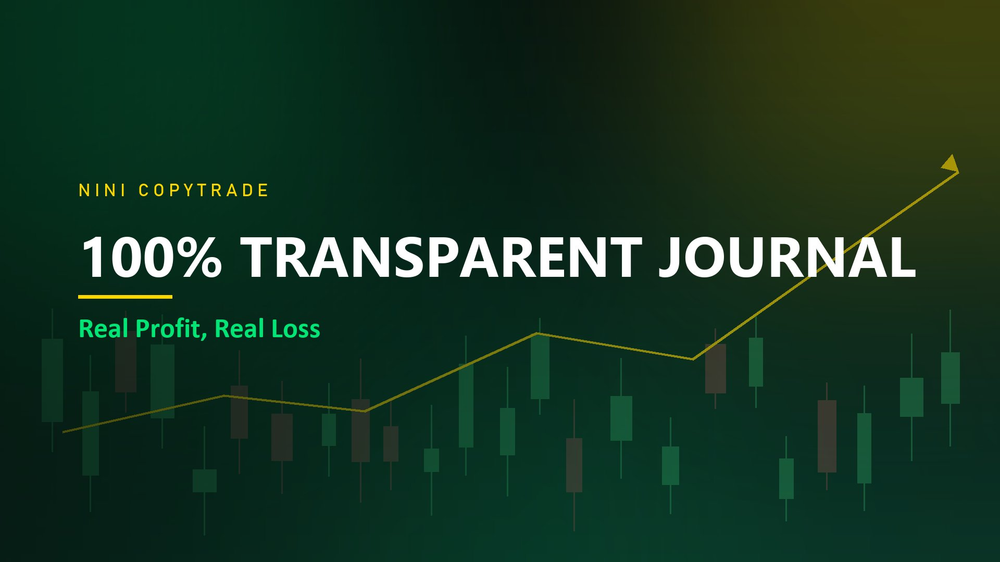
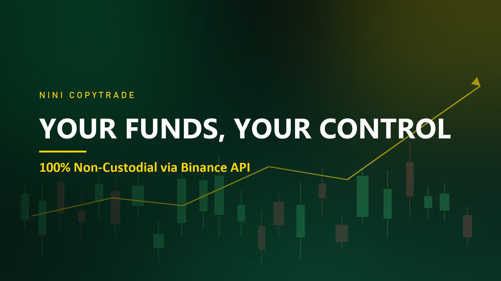
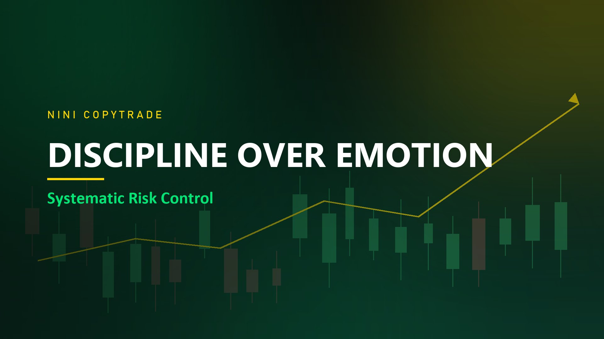
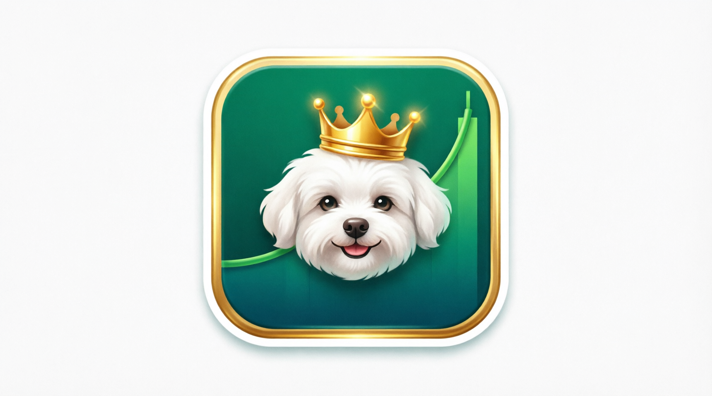

Automated Binance Futures Copy Trading System. Fully Transparent & Data-Driven.
Futures only • Risk management built-in • No hidden fee
Win Rate •
53.84%
• Net Profit •
+$5,305.18
• Profit Factor •
1.2
• Total Trades •
1,081+
Data performa akun copytrade — transparan, diverifikasi, dapat dicek langsung di halaman Portofolio.
Aplikasi desktop ringan yang menyalin setiap open & close posisi dari master signal Nini ke akun Binance Futures Anda — otomatis, real-time, dan selalu disiplin.

Nini's Copy Trade FollowerAllocated Capital
$ 26.44
Active Positions
0 / 1
Mode
Auto Follow
> Waiting for next signal...
16:18:56 [HEARTBEAT VOICE]
16:18:56 [SOUND] play: 11 file(s)
16:29:06 [FLOATING] tidak ada posisi open
16:48:56 [SUGGEST] enable Telegram alerts → Emergency Alerts
16:49:20 [SOUND] done
16:59:09 [FLOATING] tidak ada posisi open
Setiap posisi master langsung disalin ke akun Anda — entry, TP, SL, dan close, tanpa perlu menunggu sinyal manual.
Notifikasi & suara peringatan instan bila koneksi putus, API error, atau terjadi kondisi darurat pada akun.
Batas modal, maksimum posisi, dan cut-off otomatis. Tidak ada overtrade — aturan dipegang, bukan emosi.
Unduh aplikasi Nini Follower versi trial. Tanpa biaya, tanpa kartu kredit — langsung jalan.
Download Nini Follower (v1.0.2)Windows 10/11 • 60 MB • Trial Mode Free
Unduh paket Nini Follower dan install di Windows. Gratis di mode trial.
Masukkan API Key & Secret (tanpa withdraw). Koneksi aman, langsung terverifikasi.
Tekan tombol play. Bot aktif dan menyalin setiap sinyal dari master Nini.
3 Langkah Instalasi
Cek Keaslian File (SHA-256)
File: NINI_Follower_v1.0.2_Package.zip
Ukuran: 63.833.873 byte (±60 MB)
SHA-256 paket luar (versi baru, sekali ekstrak):
9cc9c05368c9dd6969ec71111f050149402e5a05fba4fc294d73b80378cc09a6
Cara cek di Windows — buka PowerShell di folder download, lalu tempel perintah ini:
Get-FileHash .\NINI_Follower_v1.0.2_Package.zip -Algorithm SHA256
Hasilnya harus persis sama dengan baris SHA-256 di atas. Jika beda, file belum selesai terunduh atau bukan paket resmi — unduh ulang.
SHA-256 aplikasi/inner v1.0.2 (kanal auto-update server):
3aa575b9650a3497860c4679c4aadffe7d57fc464f523bef14a66b2e623d6fb4
Sumber resmi: manifest auto-update https://api.nini.web.id/v1/update/manifest
Masa trial Anda telah selesai. Upgrade ke Paket Premium (Monthly Subscription) untuk melanjutkan otomatisasi trading dan akses seluruh fitur unggulan tanpa batas.
100% Transparan & Aman. Modal trading tetap di akun Binance Anda via API Key (Read & Trade Only, Non-Withdrawal).
Untuk pendaftaran dan konfirmasi pembayaran, silakan hubungi Admin via WhatsApp.
Daftar menggunakan link referral resmi kami untuk mendapatkan potongan fee trading & dukungan penuh selamanya.
Daftar Akun Binance DisiniDi saat yang lain hanya memamerkan grafik hijau, Bro Avo (Trader 6+ tahun mantan pengelola dana institusi) membuka jurnal trading Nini Master secara utuh: Profit, Loss, Drawdown, hingga periode terburuk. Karena dalam bisnis trading, Loss adalah hal riil yang dikelola dengan kedewasaan dan disiplin ketat.
Saldo Anda tetap utuh di akun Binance pribadi Anda. Saat membuat API Key, Anda wajib mematikan izin Withdraw dan HANYA mengaktifkan izin Trading Futures. Siapa pun tidak akan bisa menarik uang Anda.
Berapa pun profit yang Anda dapatkan, 100% adalah milik Anda. Kami tidak memotong hasil trading Anda.
Tidak ada janji manis pasif income instan. Ini murni software executor yang meniru posisi trading Master secara otomatis dan presisi di PC/VPS Anda.
dana tetap di akun Binance Anda; izin API hanya Trading Futures, Withdraw dinonaktifkan.
hasil 100% milik Anda; pendapatan kami hanya langganan bulanan flat, bukan potongan profit.
report performa terbuka untuk publik termasuk kerugian; trading futures berisiko tinggi, kinerja masa lalu tidak menjamin hasil masa depan.
Sistem terbaik tetap kalah tanpa kedisiplinan. Baca dan patuhi aturan berikut sebelum memulai.
Trading futures dengan leverage berisiko tinggi dan dapat menyebabkan kehilangan seluruh modal. Kinerja masa lalu tidak menjamin hasil di masa depan. Seluruh keputusan trading dan risiko sepenuhnya berada di tangan Anda. Nini Trading Lab tidak menjamin keuntungan.
Masih bingung cara setup API Key, memilih waktu terbaik bergabung, atau memasang aplikasi di PC/VPS? Tim kami siap mendampingi proses Anda dari awal sampai siap eksekusi.
Konsultasi Setup dengan AdminSemua data performa dan panduan kami terbuka untuk dicek siapa pun — tanpa login, tanpa titip dana.
Paket Windows v1.0.2, SHA-256 terverifikasi, mode trial gratis.
Kurva equity, drawdown, dan daftar trade — diperbarui tiap jam.
Simulasi ribuan skenario untuk uji ketahanan modal.
📖Cara kerja API key, risiko, dan ciri memilih bot yang aman.
🇮🇩Cara kerja, legalitas Bappebti → OJK, status Binance, dan tips memilih master trader.
⚠️5 ciri investasi bodong berkedok copy trading dan langkah aman sebelum setor modal.
Pertanyaan seputar instalasi, API key, atau setup copytrade? Chat langsung dengan admin kami.